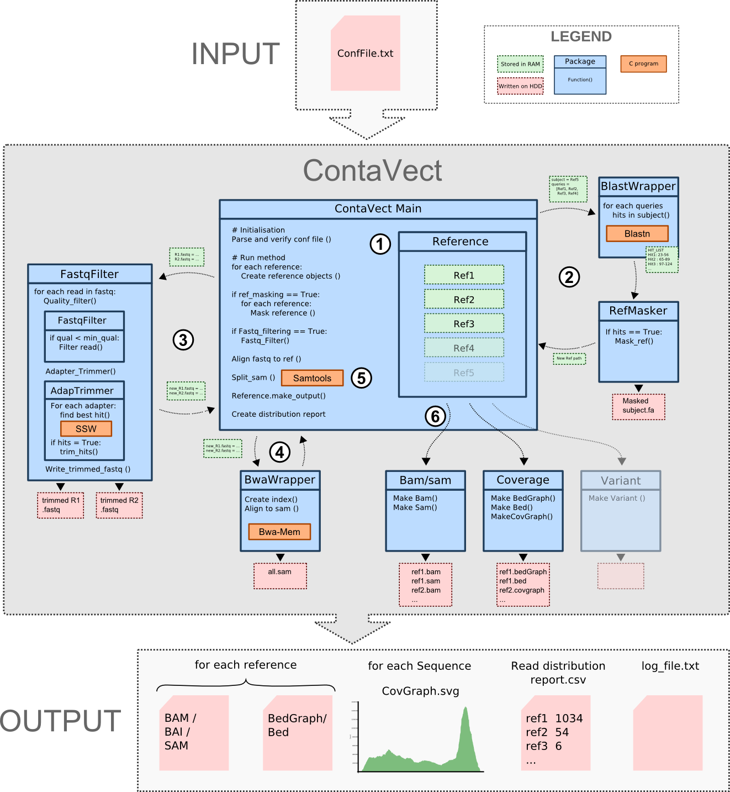

Analyse DNA contaminants from NGS data
Contavect was developped to quantify and caracterize DNA contaminants from gene therapy vector production after NGS sequencing. This automated pipeline can however be used for wider pourpose requiring to identify map NGS datasets consisting of a mix of DNA sequences on multiple references. It combine several features such as reference homologies masking, fastq filtering/adapter trimming, short read alignments, SAM file splitting and generating human readable output.
Contavect a python pipeline composed of several modules linked together to analyse NGS Data. Here is a description of the overall workflow principle :

For more information, a comprehensive developper documentation can be generated from ContaVect.dox using Doxygen with doxypy.
The programm was developed under Linux Mint 16/17 and require a python 2.7 environment. The following dependencies are required for proper program excecution:
In addtion 2 third party python packages are also needed
$ git clone https://github.com/a-slide/ContaVect/ my_folder/
$ sudo chmod u+x ContaVect.py
3.Compile the ssw aligner (and add the dynamic library it to the path)
If you wish to perform a step of adapter trimming before mapping you need to complile the dynamic library ssw.so to be able to use the Smith watermann algorithm forked from mengyao's Complete-Striped-Smith-Waterman-Library
To use the dynamic library libssw.so you may need to modify the LD_LIBRARY_PATH environment variable to include the library directory (export LD_LIBRARY_PATH=$PWD) or for definitive inclusion of the lib edit /etc/ld.so.conf and add the path or the directory containing the library and update the cache by using /sbin/ldconfig as root
Prepare the configuration file to include your files and settings as indicated in the template Conf.txt file provided with the source files
$ ./ContaVect.py Conf.txt
No command line option available, everything is in the Configuration file
2 possibilities:
Adrien Leger - 2014